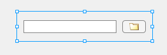
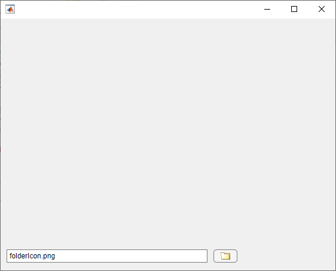
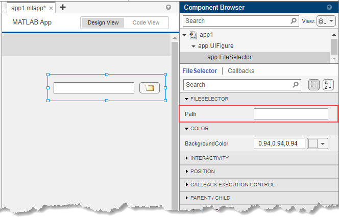

Create Public Properties for Custom UI Components in App Designer
When you develop a custom UI component in App Designer, create properties to store data and to allow users to modify the appearance and behavior of the component when using it in an app. Properties of a custom UI component can be either public or private. Public and private properties serve different purposes, and the type you create depends on your goal.
Public properties are accessible when the component is used in an app. Create a public property to provide customization options that app creators can set when building an app with your component.
Private properties are accessible only within your component code. Create a private property to store data and to share that data between callbacks in your component.
Because public properties can be set and queried by others when they create an app that uses your component, it is a best practice to validate the values that a public property of your component can accept.
To add a public property to a component, use these steps:
Create New Public Property — Create a robust and user-friendly public property by initializing and validating the property values.
Configure Public Property — Write code to link the public property value to the custom component appearance and behavior.
Verify Public Property — Verify that setting the property programmatically updates the custom component and that the property appears when the component is used in an App Designer app.
The example on this page shows how to create, configure, and verify a public property for
a custom UI component that allows users to select a file from their system. The public
property Path stores the path to the file that an app user selects.

To explore the finished FileSelector component in App Designer, see
Full Example: FileSelector Component.
Create New Public Property
While building a custom UI component, you can create a new public property in multiple ways, depending on where in App Designer you are working:
In the Component Browser, select the top-level component node. Under the Custom UI Component tab in the Property Inspector, click the
 button.
button.In the Editor tab in Code View, click Property and select Public Property.
In the Code Browser in Code View, under the Properties tab, click the
button.
When you add a new public property, App Designer opens a dialog box that lets you specify property details. This table lists the dialog box options.
| Option | Details |
|---|---|
| Name | The name of the public property. App creators can use the property name to set and access the value of the property in an app. |
| Description | A description of what the property does. The description is inserted as a comment next to the property definition in Code View. |
| Data Type | The data type of the value that the property stores. Select a common data type from the drop-down list in the dialog box, or type any MATLAB® data type. For the public property to appear in the Property Inspector when an app creator uses your component in App Designer, you must specify a data type or default value. Only certain data types allow for in-place property editing in Design View. For a list of these supported data types, see Configure Custom UI Components for App Designer. You can specify a data type that is not included in the list, but the app creator will have to set the property value programmatically in Code View instead of interactively in the inspector. |
| Default Value | The default value of the public property when the component is added to an app. For the public property to appear in the Property Inspector when an app creator uses your component in App Designer, you must specify a data type or default value. |
| Size | The size of the data that the property stores. Specify the size of the data as the number of rows by the number of columns. |
| Validation Functions | The validation functions applied to the property value when the app creator sets it. Use validation functions to help app creators avoid unexpected behavior when using your component and to provide descriptive error messages when a user specifies an invalid property value. Some common types of validation include:
For a list of the available validation functions and their uses, see Property Validation Functions. |
| MATLAB Property Attributes | The attributes associated with the property. Property
attributes control characteristics like access, data storage, and visibility of
the property. The For a list of property attributes and their uses, see Property Attributes |
To edit an existing public property that you have created, select the top-level component node in the Component Browser, click the button next to the property name, and select Edit. This selection brings up the Edit Property dialog box with the existing property configurations. You can update any configurations and click OK to apply the changes.
To create the Path property for the FileSelector
component, navigate to the Component Browser and select the
FileSelector node. Then, click the  button.
button.
Fill out these fields in the Add Property dialog box:
Name — Enter
Path.Data Type — Select
stringfrom the drop-down list.Validation Functions — Select the
mustBeFilevalidation function from the drop-down list to validate that the value represents a valid file.MATLAB Property Attributes — Select the
AbortSetattribute. This selection specifies that MATLAB does not set the property value if the new value is the same as the old one. SpecifyingAbortSetcan improve the performance of your component. Because it is possible that an app creator will program theFileSelectorcomponent to perform an expensive operation, such as processing file data, after an app users selects a new file, this attribute ensures that any code in an app runs only if the app user selects a new file.
Do not specify a default value for the Path property because the
property value depends on the files on an app user's system.
Configure Public Property
After you create a public property, write code to associate the property value with the appearance and behavior of the custom component. Often, you can do this in two steps:
Update Public Property Value — Update the value of the public property when an app user interacts with the custom component.
Update Underlying Components — Update the display or behavior of the underlying components when an app creator sets the value of the public property.
Update Public Property Value
To update the value of a public property when an app user interacts with the
component, create a callback associated with an underlying UI component, and update the
public property value in the callback function in Code View. You can
reference the public property in your code by using the pattern
comp.PublicPropertyName.
In the FileSelector component, update the value of the
Path property in response to two interactions:
When the user specifies a new file by typing a path to the file in the edit field
When the user selects a new file interactively by pressing the button
For the edit field interaction, create a ValueChangedFcn callback
for the edit field in the FileSelector component:
Right-click the
comp.EditFieldnode in the Component Browser and select Callbacks > Add ValueChangedFcn callback.Add code to the
EditFieldValueChangedfunction in Code View to update the value of thePathproperty to align with the path that is displayed in the edit field:comp.Path = comp.EditField.Value;
For the button interaction, create a ButtonPushedFcn callback for
the button in the FileSelector component:
Right-click the
comp.Buttonnode in the Component Browser and select Callbacks > Add ButtonPushedFcn callback.Add code to the
ButtonPushedfunction in Code View to open a file selection dialog box and then to update the value of thePathproperty based on the file that the user selects:[fileName,pathName] = uigetfile("","Select a file"); if ~isequal(fileName,0) comp.Path = fullfile(pathName,fileName); end
Update Underlying Components
To update the display or behavior of the underlying components when an app creator
sets the value of a property, write code in the update function in
Code View. This function executes whenever the value of a property
of the custom component changes.
In the update function of the FileSelector
component, write code to display the value of the Path property in the
edit
field:
function update(comp) comp.EditField.Value = comp.Path; end
Verify Public Property
You can verify that a public property appears and behaves as expected in multiple ways:
Create an instance of the custom component from the MATLAB Command Window and set the property programmatically.
Add the custom component to an App Designer app and set the property using the Property Inspector.
Verify Public Property Programmatically
Create an instance of the custom component by entering the name of the file in the MATLAB Command Window. Return the component object as a variable and use the variable to set the property programmatically.
Verify that the Path property is linked to the
FileSelector component display by navigating to the folder where the
FileSelector.mlapp file is saved and entering this code into the
MATLAB Command Window:
comp = FileSelector;
comp.Path = "folderIcon.png";
The path is displayed in the edit field.
You can also verify that your property validation is working as intended. For example,
if you set the Path property to a nonexistent file, MATLAB detects the invalid file using the mustBeFile validation
function and throws a helpful
error.
comp.Path = "myFile.txt";Error setting property 'Path' of class 'FileSelector'. The following files do not exist: 'myFile.txt'.
Verify Public Property in App
You can also verify that a public property appears and behaves as expected by configuring the custom component for use in App Designer apps. You can then add the component to an app and interact with it using the Component Browser.
With the FileSelector.mlapp file open in App Designer, follow these
steps to add the component to an App Designer app.
In the Designer tab, click
 Configure for Apps.
Configure for Apps.Fill out the App Designer Custom UI Component Metadata dialog box, and then click OK.
In the confirmation dialog box, click Add to Path to add the component and generated
resourcesfolder to the MATLAB path.In the Designer tab, click
 New and select Blank App.
New and select Blank App.Drag the file selector component from the Component Library onto the app canvas. When the component is selected in the Component Browser, the
Pathproperty appears in the Property Inspector.
Note
Avoid using your component in an App Designer app while you are actively developing your component. If you make a change to your component code while the component is being used in an open App Designer app, you must restart App Designer to see the changes reflected within the app. For more information, see Verify Behavior of Custom UI Components in App Designer.
Full Example: FileSelector Component
This example shows the full FileSelector custom UI component code created in App Designer. The component is made up of a button that app users can press to select a file on their system and an edit field that displays the path to the selected file. The component interface consists of a public property and a public callback:
Path— A public property that stores the path to the selected filePathChangedFcn— A public callback that executes whenever a user selects or enters a new file